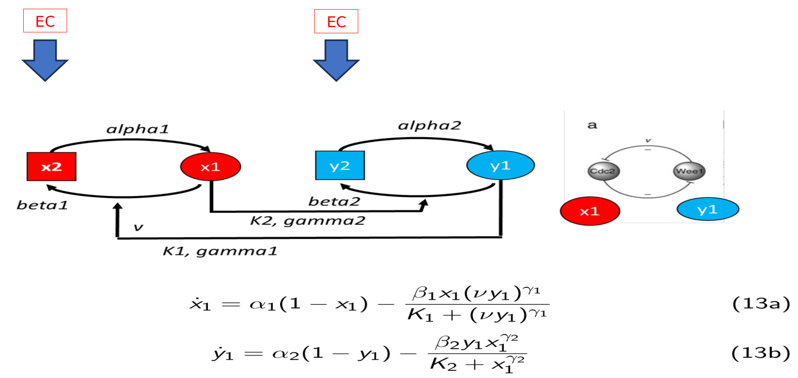

La Red: un Mapa Visual del Sistema
Antes de escribir ecuaciones, dibujemos quién hace qué
Imagina dos proteínas, X₁ e Y₁, que no se llevan bien: cada una intenta apagar a la otra. Si X₁ sube mucho, apaga a Y₁. Si Y₁ sube mucho, apaga a X₁. Eso significa que no pueden estar ambas activas al mismo tiempo: una gana y la otra pierde. A esta arquitectura se le llama toggle switch (interruptor biológico), y es uno de los motivos más importantes en biología porque permite a las células tomar decisiones y recordar cuál tomaron.
Arquitectura del sistema
La red tiene dos módulos acoplados. Cada módulo tiene una versión inactiva (X₂, Y₂) y una versión activa (X₁, Y₁):
Módulo X
- X₂ → X₁: el precursor X₂ se activa, con velocidad base α₁.
- X₁ → X₂: la forma activa se desactiva, con velocidad β₁. Esta desactivación es acelerada por Y₁ (respuesta sigmoidal tipo Hill).
Módulo Y
- Y₂ → Y₁: el precursor Y₂ se activa, con velocidad base α₂.
- Y₁ → Y₂: la forma activa se desactiva, con velocidad β₂. Esta desactivación es acelerada por X₁ (Hill).
El acoplamiento cruzado (la clave de todo)
- Y₁ inhibe a X₁ (le dice: "desactívate").
- X₁ inhibe a Y₁ (le dice: "desactívate").
Esto produce una doble retroalimentación positiva: cuando una baja, la otra sube. El sistema tiene dos estados estables alternativos.
Imagina dos vecinos que, cada vez que uno pone música alta, el otro llama a la policía. Nunca pueden tener los dos la música alta al mismo tiempo. Si uno empieza fuerte, el otro se silencia. Y una vez que uno se silenció, le cuesta volver a empezar.
Eso es lo que hace este interruptor biológico: el que sube primero le quita el turno al otro. Y una vez establecido, es difícil darle la vuelta.
Moduladores externos (EC)
Los cuadros EC (External Conditions) representan factores externos que ajustan los parámetros: por ejemplo, una hormona o un nutriente puede hacer que el acoplamiento entre X₁ e Y₁ sea más fuerte o más débil. Al parámetro que mide esa "fuerza del acoplamiento" lo llamamos ν, y jugará un papel protagónico en el Paso 8.

Idea clave: el dibujo que acabas de ver contiene toda la información que necesitaremos después. Cada flecha se convertirá en un término de las ecuaciones del Paso 2.
Las Ecuaciones: de Flechas a Fórmulas
Traducimos el dibujo del Paso 1 al lenguaje de las EDOs
Cada flecha del diagrama se convierte en un término matemático. Los procesos simples (activación, desactivación) dan términos lineales. Los procesos regulados (Hill) dan términos sigmoidales, que son clave para la biestabilidad. Juntando todo obtenemos un sistema de 4 ecuaciones diferenciales.
Ley de acción de masas + cinética de Hill
Términos de reacción
Producción de X₁ (proporcional a su precursor):
Degradación de X₁, acelerada por Y₁ (función sigmoidal tipo Hill):
Producción de Y₁:
Degradación de Y₁, acelerada por X₁:
Una función sigmoidal es como un interruptor graduado. Si Y₁ es poquita, la degradación de X₁ es casi nula (el interruptor está apagado). Si Y₁ sube lo suficiente, la degradación se dispara de golpe (el interruptor se enciende). El exponente de Hill γ controla qué tan brusco es ese encendido:
- γ = 1: respuesta suave y proporcional (casi lineal).
- γ grande: respuesta casi de "todo o nada", muy cooperativa.
Sistema completo de EDOs (4 dimensiones)
Juntando los cuatro términos para las cuatro variables:
¿Qué significa cada parámetro?
- α₁, α₂: velocidad "natural" con la que cada precursor se activa solo (sin ayuda del otro).
- β₁, β₂: la velocidad máxima a la que el otro puede acelerar la desactivación.
- K₁, K₂: la "sensibilidad" del interruptor: qué concentración del modulador necesita para empezar a hacer efecto.
- γ₁, γ₂: el exponente de Hill. Si es grande, el sistema responde como un interruptor brusco (todo o nada). Es la clave de la biestabilidad.
- ν: la "fuerza" del acoplamiento Y₁ → X₁. Lo vamos a usar como parámetro de control en el análisis de bifurcación.
Atajo por Conservación: de 4 ecuaciones a 2
Una regla matemática que simplifica muchísimo el problema
En este modelo, el precursor X₂ solo se convierte en X₁ y viceversa: no se crea ni se destruye nada. Eso significa que la suma X₁ + X₂ es siempre constante. Lo mismo pasa con Y₁ + Y₂. Si sabemos cuánto vale X₁, automáticamente sabemos cuánto vale X₂. ¡No hace falta simular las dos! Ese truco nos deja con la mitad de ecuaciones.
Derivación
Como no hay síntesis de novo ni degradación total de las proteínas (solo conversión entre formas), las cantidades totales se conservan:
Normalización: sin pérdida de generalidad, tomamos CX = CY = 1 (es decir, medimos las concentraciones como fracción del total):
Verificación algebraica
Si sumamos las dos primeras ecuaciones del sistema 4D, todo se cancela:
Sistema reducido (2 dimensiones)
Sustituyendo X₂ = 1 − x₁ e Y₂ = 1 − y₁, el sistema se reduce a:
Ventaja computacional: pasamos de 4 EDOs a 2. Esto acelera el análisis numérico y hace mucho más fácil visualizar el espacio de fases. Y sin perder nada de información.
Por qué esto importa: de aquí en adelante trabajaremos solo con x₁(t) y y₁(t). Las variables X₂ e Y₂ se calculan automáticamente como 1 − x₁ y 1 − y₁.
Parámetros: las Perillas que Podemos Girar
Qué podemos cambiar, qué queremos reproducir, y cómo explorarlo
Los parámetros son números que definen el comportamiento del modelo (como las perillas de una mezcladora de sonido). Los estados son las variables que cambian con el tiempo (x₁ e y₁). En biología, los parámetros dependen del tipo de célula, las condiciones ambientales, etc. Aquí los vamos a mover libremente para ver qué pasa.
Condiciones iniciales
Las concentraciones iniciales de las formas activas:
El 0 significa "ninguna proteína activa" y el 1 significa "todas activas".
Comportamientos que queremos ver
- Biestabilidad: dos atractores coexisten con los mismos parámetros.
- Dependencia del pasado: el estado final depende de dónde empezó (histéresis).
- Transiciones: al cambiar ν, el sistema pasa de monostable a biestable y viceversa.
Tabla de parámetros
| Símbolo | Qué controla | Rango explorado |
|---|---|---|
| α₁, α₂ | Velocidad de activación basal | 0.1 – 2.0 |
| β₁, β₂ | Velocidad máxima de desactivación | 0.5 – 10 |
| K₁, K₂ | Sensibilidad del interruptor (Hill) | 0.05 – 1.0 |
| γ₁, γ₂ | Cooperatividad (brusquedad del interruptor) | 1 – 8 |
| ν | Fuerza del acoplamiento Y₁ → X₁ | 0.1 – 3.0 |
🔧 Explorador interactivo
Mueve los deslizadores y mira en tiempo real cómo cambian la dinámica temporal (izquierda) y el plano de fase (derecha). Los puntos de color indican los estados estables: verde = estable, ámbar = silla (inestable pero no inestable del todo, es un punto de "paso").
Piensa en una mesa de mezclas de DJ. Cada parámetro es una perilla que controla un aspecto del sonido: α controla el "volumen" del proceso de activación, β el de la desactivación, γ el de la brusquedad del interruptor, ν el de la fuerza con que un módulo afecta al otro. Mover las perillas cambia completamente la música.
Estados de Equilibrio: ¿Dónde se Queda el Sistema?
Los puntos donde el sistema "se detiene" y cómo saber si son estables
Un estado de equilibrio es una combinación (x₁, y₁) en la que el sistema deja de moverse: las derivadas se anulan. La pregunta importante es: si me acerco un poquito a ese estado, ¿el sistema vuelve a él (estable) o se aleja (inestable)?
Usamos dos herramientas para responder:
- Las nullclines: curvas donde una de las dos derivadas se anula.
- El Jacobiano: una matriz que nos dice, para cada punto de equilibrio, si es estable, inestable o silla.
Ecuaciones de equilibrio
En el estado estacionario, ẋ₁ = ẏ₁ = 0. Esto nos da dos ecuaciones algebraicas no lineales:
Nullclines: las "carreteras" del plano de fase
Cada ecuación define una curva en el plano (x₁, y₁). A esas curvas las llamamos nullclines:
- Nullcline X: dónde ẋ₁ = 0. Despejando y₁ como función de x₁:
- Nullcline Y: dónde ẏ₁ = 0. Despejando y₁:
¿Para qué sirven? Los puntos donde las dos nullclines se cruzan son los estados de equilibrio. Y ver cuántas veces se cruzan (una o tres) nos dice si el sistema es monostable o biestable.
El Jacobiano y la estabilidad
El Jacobiano es una matriz de derivadas parciales que nos dice cómo responde el sistema a pequeñas perturbaciones en cada punto fijo:
A partir de la traza y el determinante de J:
- tr(J) < 0 y det(J) > 0 → punto estable (atractor).
- det(J) < 0 → punto silla (atrae en una dirección y repele en la otra).
- tr(J) > 0 y det(J) > 0 → punto inestable (repulsor).
Si existen dos atractores estables con los mismos parámetros, el sistema es biestable.
🔍 Puntos fijos del modelo por defecto (ν = 1.0)
Se buscan numéricamente todas las soluciones del sistema algebraico no lineal y se clasifican con el Jacobiano.
Resultado: aparecen dos puntos estables (uno con X₁ alto y otro con X₁ bajo) y una silla entre ellos. El sistema es biestable.
Imagina un paisaje con dos valles separados por una colina. Los valles son los dos atractores (estados estables); la cima de la colina es la silla. Si dejas una pelota en la ladera, rueda hacia uno de los dos valles. Cuál valle es, depende de dónde la dejaste.
En nuestro sistema, "dónde la dejas" es la condición inicial (x₁(0), y₁(0)). Y "hacia dónde rueda" es el atractor final.
Simulación: Dejemos Correr el Sistema
Cómo resolver numéricamente las ecuaciones y ver el resultado
Las ecuaciones diferenciales no tienen una solución "de papel y lápiz" sencilla. Entonces las resolvemos numéricamente, avanzando paso a paso en el tiempo. Usamos el método de Runge–Kutta de orden 4 (RK4), que es muy preciso. La idea es: en cada instante, calculamos cómo cambiarían x₁ e y₁, y damos un pasito hacia adelante.
Método numérico
RK4 con paso h = 0.01:
- Precisión de orden 4: el error disminuye muy rápido al reducir el paso.
- Adecuado para sistemas suaves como el nuestro.
Prueba clave
Simulamos desde dos condiciones iniciales distintas:
- (x₁(0), y₁(0)) = (0, 0) — arrancamos con Y₁ casi activa.
- (x₁(0), y₁(0)) = (0, 0.9) — arrancamos con X₁ casi activa.
Si ambas terminan en puntos diferentes, hay biestabilidad.
📈 Reproducción interactiva (Figura 3)
A la izquierda: dinámica temporal de y₁(t) desde dos condiciones iniciales. A la derecha: diagrama de fase con el campo de direcciones, las nullclines y las trayectorias. Mueve ν para ver cómo cambia todo.
- Cuando las dos curvas terminan en niveles distintos, estamos viendo biestabilidad en acción: dos futuros posibles para la misma ν.
- Cuando las dos curvas terminan en el mismo nivel, el sistema es monostable: hay un solo destino.
📊 Mismo estado inicial, distintas ν
Todas las trayectorias parten de y₁(0) = 0.9. Lo único que cambia es ν. Observa cómo algunos valores llegan arriba, otros abajo, y otros quedan en un punto intermedio.
ν es como la "fuerza" con que empujas una pelota colina arriba. Si empujas suavecito (ν pequeño), la pelota se queda en el valle donde estaba. Si empujas muy fuerte (ν grande), puede que la pelota cruce la colina y se vaya al otro valle. En el punto medio hay una región de biestabilidad donde depende de la historia.
Ajuste de Parámetros: Encontrar el Modelo que Mejor Explica los Datos
El paso que conecta el modelo abstracto con datos reales (o sintéticos)
En la vida real, no conocemos los parámetros de antemano: hay que estimarlos a partir de datos experimentales. La idea es simple: probamos distintos valores de los parámetros y nos quedamos con el que hace que las curvas del modelo se parezcan más a los datos. A esa diferencia entre modelo y datos la llamamos error (SSE), y queremos minimizarlo.
La matemática del ajuste
Buscamos el vector de parámetros θ* que minimiza el error cuadrático:
Estrategia de este cuaderno
- Generamos datos sintéticos: simulamos con parámetros "verdaderos" (ν_true = 1.0) y añadimos ruido gaussiano, como si fueran datos de laboratorio.
- Fijamos todos los parámetros excepto ν, para ver el paisaje de error en una sola dimensión (más fácil de visualizar).
- Movemos ν y miramos cómo cambia el SSE.
En un problema real se usaría un optimizador automático (Levenberg-Marquardt) con todos los parámetros a la vez. Aquí priorizamos la intuición visual: tú mueves el slider a mano y ves cómo baja el SSE.
🎯 Ajuste interactivo: encuentra el ν correcto
Los puntos rojos son datos sintéticos (generados con ν_true = 1.0 + ruido gaussiano, σ = 0.03). Mueve ν para que la curva azul del modelo pase lo más cerca posible de los puntos.
Ajusta el slider para encontrar el mínimo del SSE.
Ajustar ν es como afinar una radio: giras la perilla hasta que la señal se escucha clara. Si giras demasiado, vuelves a perder la señal. El gráfico de la derecha (SSE vs ν) es como el indicador de "cuán limpia" está la señal: tiene un mínimo en ν ≈ 1.0, que es el valor correcto.
Robustez: ¿Qué Tan Sensible es el Sistema a los Cambios?
El análisis más importante para aplicaciones biológicas reales
Una pregunta crítica en biología: si cambiamos un poquito un parámetro (por ejemplo, ν), ¿cambia mucho el comportamiento? Si no cambia mucho, decimos que el sistema es robusto. Si cambia drásticamente, decimos que es sensible. Y si pasa de tener dos atractores a uno solo, decimos que hubo una bifurcación: un cambio cualitativo muy importante.
Objetivo del análisis
Estudiar cómo cambia el comportamiento del sistema al variar ν:
- ¿Cuántos atractores hay?
- ¿Cómo cambian sus valores?
- ¿Dónde ocurren las transiciones?
Por qué es importante
El análisis de robustez revela la plasticidad biológica: cuánto se puede perturbar el acoplamiento antes de que la célula pierda su capacidad de recordar su estado.
🔀 Diagrama de bifurcación global
Barremos ν entre 0.1 y 3.0. Cada punto es un estado estacionario: verde = estable, ámbar = silla, rojo = inestable.
- Tres ramas = biestabilidad (dos estables + una silla). Es lo que vemos en la zona central (ν bajo e intermedio).
- Una sola rama = monostable. Es lo que vemos para ν muy grande.
🛡️ Análisis de robustez interactivo
Comparamos dos configuraciones (base vs. perturbada) para cuantificar la sensibilidad del sistema.
Imagina que tienes un auto en una colina con dos valles. Si le das un pequeño empujón, ¿vuelve al mismo valle? Eso es robustez. Si con el mismo empujoncito cruza al otro valle, el sistema es sensible. Y si con el empujoncito el auto se va rodando libre hacia un nuevo valle que antes no existía, hubo una bifurcación.
Experimento Sugerido: Tres Escenarios, Tres Historias
Carga cada preset y compara los diagnósticos
Instrucciones
Haz clic en cada botón y observa cómo cambian automáticamente los sliders del Paso 8. Verás la página desplazarse al Panel de análisis de robustez. Ahí podrás observar la longitud de las "flechas" en el gráfico C) Bifurcación local y el diagnóstico textual. "Verás" la robustez antes de leerla.
Configuración A · Robusto
ν_base = 1.00
Δν = 0.10
y₀ = 0.90
Los atractores apenas se mueven → sistema robusto.
Configuración B · Sensible
ν_base = 1.20
Δν = −0.30
y₀ = 0.90
Un atractor se desplaza apreciablemente → sensibilidad moderada.
Configuración C · Bifurcación
ν_base = 1.00
Δν = 0.90
y₀ = 0.90
Aparece o desaparece un atractor → cambio cualitativo.
Conclusiones: Lo Que Aprendimos
Un repaso de las ideas principales, en lenguaje sencillo
1. Del dibujo a las ecuaciones, sin misterio
Cada flecha del diagrama se convierte en un término matemático. Los procesos simples dan términos lineales; los procesos regulados (Hill) dan términos sigmoidales. Con eso armamos un sistema de 4 EDOs, que luego redujimos a 2 EDOs usando una ley de conservación.
2. La cooperatividad es lo que hace la magia
Los exponentes de Hill γ₁, γ₂ > 1 son esenciales para tener biestabilidad. Si ponemos γ = 1, la respuesta es proporcional y el sistema pierde la capacidad de conmutar. Es decir: la célula necesita "respuestas bruscas" para poder tomar decisiones claras.
3. La fuerza del acoplamiento ν decide el destino
El parámetro ν controla cuán fuerte es el acoplamiento Y₁ → X₁:
| Rango de ν | Comportamiento |
|---|---|
| ν < 0.7 | Biestable dos atractores coexisten |
| 0.7 < ν < 1.5 | Biestable asimétrico asimetría creciente |
| ν > 1.5 | Monostable un único atractor |
4. El pasado importa (histéresis)
Confirmamos numéricamente que el estado final depende de dónde empezó el sistema. Esto es la memoria biológica: la célula recuerda su decisión.
5. Por qué esto importa en biología real
Este tipo de red aparece una y otra vez: interruptores de decisión celular, memoria epigenética, ciclos celulares irreversibles, diferenciación de linajes. Entender su matemática es entender cómo las células toman decisiones.
Sugerencias para seguir explorando
- Extensión 1: Cambia el término x₁^γ₂ por (x₁/K)^γ para ver cómo la afinidad modifica la respuesta.
- Extensión 2: Añade una degradación basal δ·x₁ al modelo y verifica si la biestabilidad sobrevive.
- Extensión 3: Convierte ν en una variable dinámica lenta (como en la Sección 2.9) y estudia el sistema híbrido de 3D.
- Extensión 4: Implementa una red de 3 nodos con retroalimentación cíclica y compara el espacio de parámetros.